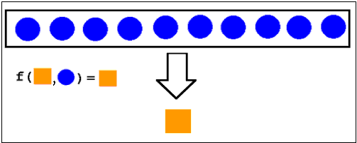

Outline
Overview
Clojure Fundamentals
Functional Programming in Clojure
Java Interop
Marco
Q & A
Sam Lee
A software engineer on the street
Overview
Clojure Fundamentals
Functional Programming in Clojure
Java Interop
Marco
Q & A
"A language that doesn't affect the way you think about programming, is not worth knowing. "
| Year | Language | Year | Language |
|---|---|---|---|
| 1957 | FORTRAN | 1993 | Ruby |
| 1958 | LISP | 1993 | Lua |
| 1959 | COBOL | 1995 | JavaScript |
| 1964 | BASIC | 1995 | Java |
| 1970 | Forth | 1995 | PHP |
| 1972 | C | 2000 | ActionScript |
| 1972 | Smalltalk | 2001 | C# |
| 1983 | C++ | 2001 | Visual Basic .NET |
| 1984 | Common Lisp | 2002 | F# |
| 1986 | Objective-C | 2003 | Groovy |
| 1986 | Erlang | 2003 | Scala |
| 1987 | Perl | 2007 | |
| 1990 | Haskell | 2009 | Go |
| 1991 | Python | 2011 | Dart |
| 1991 | Visual Basic | 2012 | Rust |
started in 2007
Original author: Rich Hickey
Latest Stable Release: 1.6.0 (April, 2014)
Open Source under Eclipse Public License
REPL
Light Table (newbie)
Eclipse with Counterclockwise
Intellij IDEA with La Clojure
Emacs with emacs-live (recommend)
A Clojure form, and parameter can also be a form.
(symbol parameter1 parameter2 ...)
(+ 1 2) ;=> 3
(* 1 3) ;=> 3
(- 3 2) ;=> 1
(/ 8 2) ;=> 4
(+ 1 2 3) ;=> 6
(+ 1 (+ 2 3) (- 3 2)) ;=> 7
(println "hello!")
;hello!
;=> nil
Boolean:
Number:
String:
Character:
Null:
Symbol:
Keyword:
Regex pattern:
(/ 3 5) ;=> 3/5
(* 5 (/ 3 5)) ;=> 3N
(not true) ;=> false
(= "aa" (str "a" "a") ) ;=> true
(= 1 1) ;=> true
(str "hello" "-" "world" "!") ;=> hello-world!
(identical? "aa" (str "a" "a")) ;=> false
(nil? nil) ;=> true
(class "hello") ;=> java.lang.String
(class 1) ;=> java.lang.Long
"It is better to have 100 functions operate on one data structure than to have 10 functions operate on 10 data structures."
List:
Vector:
Map:
Set:
(class [1 2 3]) ;=> clojure.lang.PersistentVector
(class '(1 2 3)) ;=> clojure.lang.PersistentList
(class #{1 2 3}) ;=> clojure.lang.PersistentHashSet
(class {:k1 1 :k2 2}) ;=> clojure.lang.PersistentArrayMap
(str 2 3) ;=> 23
'(str 2 3) ;=> (str 2 3)
(eval '(str 2 3)) ;=>23
(coll? [1 2 3]) ;=> true
(coll? '(1 2 3)) ;=> true
(coll? #{1 2 3}) ;=> true
(coll? {1 2 3 4}) ;=> true
;;Seqs are an interface for logical lists, which can be lazy.
(seq? [1 2 3]) ;=> false
(seq? '(1 2 3)) ;=> true
(seq? #{1 2 3}) ;=> false
(seq? {1 2 3 4}) ;=> false
(range 5) ;=> (0 1 2 3 4)
(range) ;=> (0 1 2 3 4 5 ...∞) ;lazy
(take 5 (range)) ;=> (0 1 2 3 4)
(nth (range) 3) ;=> 3
;;Use cons to add an item to the beginning of a list or vector
(cons 4 [1 2 3]) ; => (4 1 2 3)
(cons 4 '(1 2 3)) ; => (4 1 2 3)
;;Add to the beginning of a list, or the end of a vector
(conj [1 2 3] 4) ; => [1 2 3 4]
(conj '(1 2 3) 4) ; => (4 1 2 3)
(concat [1 2] '(3 4)) ;=> (1 2 3 4)
(first '(1 2 3)) ;=> 1
(rest '(1 2 3)) ;=> (2 3)
(rest ()) ;=> ()
(empty? ()) ;=> true
(apply + [1 2 3 4]) ;=> 10 ;;(+ 1 2 3 4)
(count [0 1 2 3]) ;=> 4
(def mymap {:g "Google" :a "Apple" :h "htc" :s "Samsung"}) ;=> #'user/mymap
(count mymap) ;=> 4
(mymap :a) ;=> "Apple"
(:g mymap) ;=> "Google"
(= mymap (hash-map :g "Google" :a "Apple" :h "htc" :s "Samsung")) ;=> true
(assoc mymap "o" "Oracle") ;=> {:g "Google" :a "Apple" :o "Oracle :h "htc" :s "Samsung"}
(dissoc mymap :s :h :a) ;=> {:g "Google"}
mymap ;=> {:g "Google" :a "Apple" :h "htc" :s "Samsung"} ;; immutable
;; Anonymous
(fn [x y] (* x y))
(fn [& xs] (coll? xs))
(fn sum [x] (+ x (sum dec (x))))
(sum 10) ;;=> Unable to resolve symbol: sum ...
;;In-place function
#(str %1 %2 %3) ;; arguments => %1 %2 ... %n
(def square (fn [x] (* x x)))
(def square #(* % %))
(square 10) ;=> 100
;; defn => def + fn
(defn sum
[a b c & others]
(+ a b c (apply + others)))
(sum 1 2 3 4 5 6 7) ;=> 28
(defn hello
"Say hello world!"
[] (println "Hello World!"))
(hello)
;Hello World!
;=> nil
(defn hello
"Say hello to someone!"
([] (println "Hello World"))
([someone] (println "Hello" someone)))
(hello)
;Hello World!
;=> nil
(hello "Sam")
;Hello Sam
;=> nil
Functional programming is a style of building the structure and elements of computer programs, that treats computation as the evaluation of mathematical functions and avoids state and mutable data.
First-class functions
Immutability
Pure functions (no side effect)
Recursion
Expression
Compose functions
Lazy evaluation
(def square (fn [x] (* x x))) ;=> #'user/square
(def add2 (fn [x] (+ 2 x))) ;=> #'user/add2
(defn sum-by [x f]
(apply + (map f x))) ;=> #'user/sum-by
(sum-by [1 2 3] square) ;=> 14
(sum-by [1 2 3] add2) ;=> 12
(defn power [base]
"Return a power function based on passing argument"
(let [b base]
(fn [exp] (Math/pow b exp))))
(def base2 (power 2))
(def base5 (power 5))
(base2 10) ;=> 1024
(base5 2) ;=> 25
(defn time-n [n]
(fn [y] (* n y)))
(def time3 (time-n 3))
(time3 10) ;=> 30
(defn grant [uid gid]
(let [u uid g gid]
(fn [method] (check u g method))))
(def check-permission (grant 0 1))
(check-permission "api/delete")
A recursive factorial sample

(defn factorial [n]
(if (= 1 n)
1
(* n (factorial (dec n)))))
(factorial 6) ;=> 720
(factorial 10000N) ;=> StackOverFlowError

(defn fact [n]
(letfn [(f [i a]
(if (<= i 1)
a
(f (dec i) (* i a))))]
(f n 1)))
recur is the only non-stack-consuming looping construct in Clojure.
(defn fact [n]
(loop [i n a 1]
(if (<= i 1)
a
(recur (dec i) (* i a)))))
(fact 6) ;=> 720
(fact 10000N) ;=> ...
BTW... more concise way
(defn fact [n]
(apply * (range 1 (inc n))))
(def add5 (partial + 5)) ;=> #'user/add5
(add5 5) ;=> 10
((partial + 5) 5) ;=> 10
BTW ... Curry is a chain of partial functions each with a single argument
(def not-zero? (comp not zero?))
(not-zero? 1) ;=> true
(not-zero? 0) ;=> false
((comp second reverse) '("a" 2 3 "b")) ;=> 3



(def data '(1 2 3 4 5))
(defn square [x] (* x x))
(map square data) ;=> (1 4 9 16 25)
(map #(* % %) data) ;=> (1 4 9 16 25)
(filter odd? data) ;=> (1 3 5)
(filter #(> % 5) data) ;=> ()
(filter (partial < 3) data) ;=> (4 5)
(reduce * data) ;=> 120
(reduce str data) ;=> "12345"
(reduce #(str %2 %1) data) ;=> "54321"
(take 5 (filter odd? (range))) ;=> (1 3 5 7 9)
(take 5 (map #(+ % %) (range))) ;=> (0 2 4 6 8)
(reduce + (range)) ;=> non-stop ..
(cycle [1 2 3]) ;=> (1 2 3 1 2 3 ...)
(repeat "a") ;=> ("a" "a" "a" ...)
(range) ;=> (0 1 2 3 4 ...)
(class (range)) ;=> clojure.lang.LazySeq
(take 5 (repeat 1)) ;=> (1 1 1 1 1)
(defn n-repeat [n]
(lazy-cat
(repeat n n) (n-repeat (inc n))))
(n-repeat 1) ;=> (1 2 2 3 3 3 4 4 4 4 5 5 5 5 5 ...)
(defn fib1 [n]
(if (< n 2)
n
(+ (fib1 (- n 2)) (fib1 (- n 1)))))
(fib 7) ;=> 13
(take 10 (map fib1 (range)))
;=> (0 1 1 2 3 5 8 13 21 34)
(defn fib2 [n]
(if (< n 2)
n
(+' (mfib (- n 2)) (mfib (- n 1)))))
(def mfib (memoize fib2))
(mfib 1000) ;=> StackOverflowError
(take 10000 (map mfib (range))) ;=> (0 1 1 ...)
(defn fib3 [n]
(loop [i n p 0 acc 1]
(if (zero? i)
p
(recur (dec i) acc (+' acc p)))))
(map fib3 (range 10)) ;=> (0 1 1 2 3 5 8 13 21 34)
(count (str (fib3 100000))) ;=> 20899
(def fib4
((fn f [p c]
(cons p (lazy-seq (f c (+' p c)))))
0 1))
fib4 ;=> (0 1 1 2 3 5 8 ...)
(count (str (nth fib4 100000))) ;=> 20899
(def fib5 (lazy-cat [0 1] (map +' fib5 (rest fib5))))
fib5 ;=> (0 1 1 2 3 5 8 ...)
(take 10 fib5) ;=> (0 1 1 2 3 5 8 13 21 34)
Clojure strings are Java Strings.
Clojure nil is Java’s null.
Clojure numbers are Java numbers.
Clojure regular expressions are instances of java.util.regex.Pattern.
Clojure data structures
Clojure functions implement java.lang.Runnable and java.util.concurrent.Callable
(.toUpperCase "abc") ;=> ABC
;; static method
(Integer/parseInt "10") ;=> 10
;; new Object
(java.io.File. "~/test.txt") ;=> #<File ~/test.txt>
(instance? String "foo") ;=> true
(import java.util.ArrayList)
(def foo (ArrayList. [1 2 3 4]))
(reduce + foo) ;=> 10
(seq foo) ;=> (1 2 3 4)
(.containsAll foo [2 3 4]) ;=> 4
;;; Modify object's field
(def pt (java.awt.Point. 5 10)) ;=> #'user/pt
(.x pt) ;=> 5
(set! (.x pt) 10) ;=> 10
(.x pt) ;=> 10
;;; Type hints
(defn #^String reverse
[#^String s]
(clojure.string/reverse s))
(reverse "abcd") ;=> "dcba"

Lisp is a programmable programming languages.
Homoiconicity
Extends your code in compile time.
A simple macro example..
(defmacro postfix
[expr]
(conj (butlast expr) (last expr)))
(macroexpand-1 '(postfix (1 1 +))) ; => (+ 1 1)
(postfix (1 2 3 +)) ;=> 6
A funny example ...
(require '(clojure [string :as str]
[walk :as walk]))
(defmacro reverse-it
[form]
(walk/postwalk #(if (symbol? %)
(symbol (str/reverse (name %)))
%)
form))
(reverse-it
(qesod [gra (egnar 3)]
(nltnirp "hello "(cni gra))))
;hello 1
;hello 2
;hello 3
;=> nil
(def c 5)
;; infix: ((c + 3) / 2 - 1)
(- (/ (+ c 3) 2) 1) ;=> 3
(-> c (+ 3) (/ 2) (- 1)) ;=> 3
(first (.split (.replace (.toUpperCase "a b c d")
"A"
"X")
" ")) ;=> X
(-> "a b c d"
(.toUpperCase)
(.replace "A" "X")
(.split " ")
(first)) ;=> X
(def c 5)
(->> c (+ 3) (/ 2) (- 1)) ;=> 3/4
;; (-1 (/ 2 (+3 c)))
(reduce +
(take 10
(filter even?
(map #(* % %)
(range))))) ;=> 1140
(->> (range)
(map #(* % %))
(filter even?)
(take 10)
(reduce +)) ;=> 1140
(import javax.swing.JFrame)
(doto (JFrame.)
(.setTitle "title")
(.setBackground java.awt.Color/white)
(.setSize (java.awt.Dimension. 500 500))
(.setDefaultCloseOperation JFrame/DISPOSE_ON_CLOSE)
(.setVisible true))
(doto (java.util.HashMap.)
(.put "a" 1)
(.put "b" 2)
(.put "c" 3)) ;=> #<HashMap {b=2, a=1, c=3}>
Online
Books
Toolbox
Cheatsheet